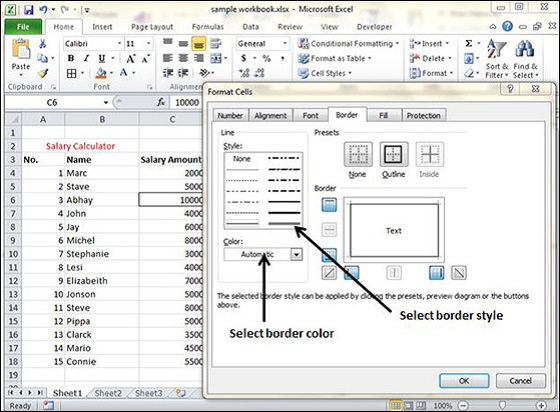
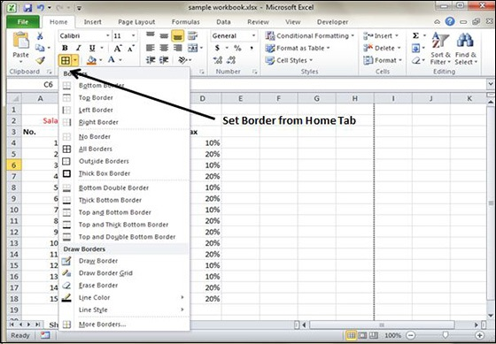
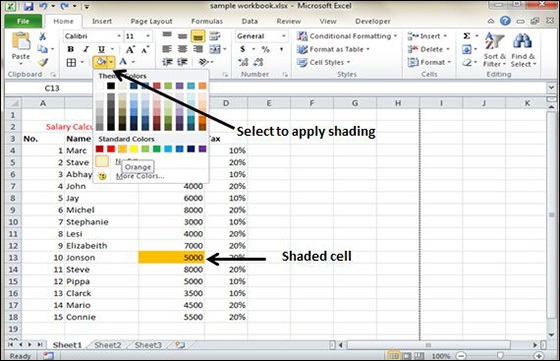

MS Excel enables you to apply borders to the cells. For applying border, select the range of cells Right Click » Format cells » Border Tab » Select the Border Style.

Then you can apply border by Home Tab » Font group » Apply Borders.

You can add shading to the cell from the Home tab » Font Group » Select the Color.
